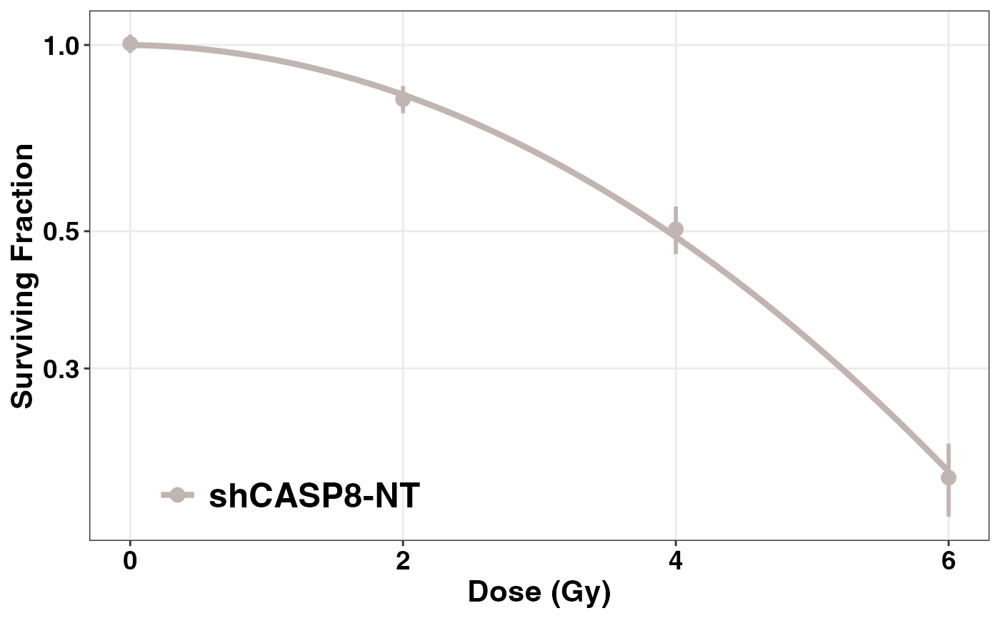
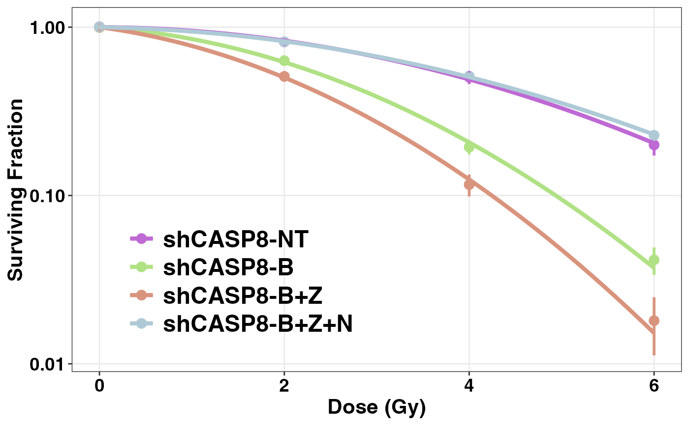

This function helps to plot the cell survival curves using
ggplot, and is the recommended way to plot this curves
over plotCSCurve. A single function plots the curves, both for
a single or multiple cell type(s), and allows most of the options necessary
to customize the figures for publication.
Usage
ggplotCSCurve(
data,
...,
method = "ml",
PEmethod = "fit",
colors = NULL,
title = "",
title_size = 20,
title_color = "black",
title_face = "bold",
title_align = "center",
subtitle = "",
sub_size = 15,
sub_color = "black",
sub_face = "italic",
sub_align = "center",
xlab = "Dose (Gy)",
xlab_size = 16,
xlab_color = "black",
xlab_face = "bold",
rem_minor_x = "yes",
emph_major_x = "no",
major_x_col = "gray",
major_x_width = 1,
ylab = "Surviving Fraction",
ylab_size = 16,
ylab_color = "black",
ylab_face = "bold",
rem_minor_y = "yes",
emph_major_y = "no",
major_y_col = "gray",
major_y_width = 1,
legend_title = "",
ltitle_size = 20,
ltitle_color = "black",
ltitle_face = "bold",
ltitle_align = "left",
legend_pos = "inside",
legend_back = "",
legend_border = "",
legend_border_width = 0,
ltext_size = 18,
ltext_color = "black",
ltext_face = "bold",
xtext_size = 14,
xtext_color = "black",
xtext_face = "bold",
ytext_size = 14,
ytext_color = "black",
ytext_face = "bold",
point_shape = 16,
point_size = 3.5,
segment_type = 1,
segment_width = 1,
curve_width = 1.5,
curve_type = 1,
theme = ggplot2::theme_bw(),
ylim = NULL,
ybreaks = ggplot2::waiver(),
save = "no",
plot_width = 5,
plot_height = 4,
units = "in",
save_path = getwd(),
save_filename = "myplot.pdf"
)Arguments
- data
A data frame containing at least the following five columns:
"cline","Exp","dose","ncells", and"ncolonies".- ...
The name of the cell type(s)/group(s). If entering multiple cell types, separate each by a comma.
- method
Method used for the fit. It's
"ml"(maximum likelihood) by default. Can be"ls"(least squares) or"franken"(weighted least squares as described by Franken eta al.(2006)).- PEmethod
Controls the value of the plating efficiencies. The default method,
"fit", calculates fitted plating efficiencies as model parameters, while"fix"uses fixed ones calculated from the observed zero dose data.- colors
A vector of strings denoting the colors of the curves. Size of the vector should be equal to or more than the number of cell types entered. If no colors are chosen by the user, the function chooses them by random and they might change with each plotting.
- title
A string denoting the title of the plot. Default is
"".- title_size
An integer denoting the font size of the title. Default is
20.- title_color
A string denoting the color of the font of the title. Default is
"black".- title_face
A string denoting the type of font face. Accepts
"bold","italic", or"bold.italic". Default is"bold".- title_align
A string denoting the justification (alignment) of the plot title. Accepts
"center","left", or"right". Default is"center".- subtitle
A string denoting the subtitle of the plot; default is
"".- sub_size, sub_color, sub_face, sub_align
Used to customize the font size, color, face, and alignment of the subtitle respectively, like the plot title. Default values of these are
15,"black","italic", and"center"respectively.- xlab
A string denoting the label of X-axis; default is
"Dose (Gy)".- xlab_size, xlab_color, xlab_face
Used to customize the font size, color, face, and alignment of the label of the X-axis respectively, like the plot title. Default values of these are
16,"black", and"bold"respectively.- rem_minor_x
If
"no", keeps the minor grids in the X-axis. Default is"yes".- emph_major_x
If
"yes", allows to emphasize and customize the major grids in the X-axis. Default is"no".- major_x_col, major_x_width
Allows the change of the color and width of the major grids in the X-axis, when
emph_major_x = "yes". Default values of these are"gray"and1respectively.- ylab
A string denoting the label of y-axis; default is
"Surviving Fraction".- ylab_size, ylab_color, ylab_face
Used to customize the font size, color, face, and alignment of the label of the Y-axis respectively, like the plot title. Default values of these are
16,"black", and"bold"respectively.- rem_minor_y
If
"no", keeps the minor grids in the Y-axis. Default is"yes".- emph_major_y
If
"yes", allows to emphasize and customize the major grids in the Y-axis. Default is"no".- major_y_col, major_y_width
Allows the change of the color and width of the major grids in the Y-axis, when
emph_major_y = "yes". Default values of these are"gray"and1respectively.- legend_title
A string denoting the title of the legend; default is
"".- ltitle_size, ltitle_color, ltitle_face, ltitle_align
Used to customize the font size, color, face, and alignment of the legend title respectively, like the plot title. Default values of these are
20,"black","bold", and"left"respectively.- legend_pos
A string denoting the position of the legend.
"inside"is default, and places the legend at the bottom left of the figure. Also accepts"outside"(places the legend outside the figure on the right) and"none"(removes the legend).- legend_back
A string denoting the color of the legend background. Default is
"".- legend_border
A string denoting the color of the legnd border. Default is
"".- legend_border_width
An integer denoting the width of the legend border. Default is
0.- ltext_size, ltext_color, ltext_face
To change the font size, color, and face of the legend texts. Default values of these are
18,"black", and"bold"respectively.- xtext_size, xtext_color, xtext_face
To change the font size, color, and face of x axis ticks.Default values of these are
14,"black", and"bold"respectively.- ytext_size, ytext_color, ytext_face
To change the font size, color, and face of y axis ticks. Default values of these are
14,"black", and"bold"respectively.- point_shape
An integer denoting the shape of the points in the plot. Default is
16.- point_size
An integer denoting the size of the points in the plot. Default is
3.5.- segment_type
An integer denoting the type of the straight line segments in the plot. Default is
1.- segment_width
An integer denoting the width of straight line segments in the plot. Default is
1.- curve_width
An integer denoting the width of curved line segments in the plot. Default is
1.5.- curve_type
An integer denoting the type of curved line segments in the plot. Default is
1.- theme
The name of the theme to be used in the plot. It should be preceded by the name of the package in the form:
package::theme(). Default isggplot2::theme_bw().- ylim
A vector denoting the limits of the y-axis. Defaults are chosen automatically by
ggplot().- ybreaks
A vector denoting the y-axis breaks/ticks. Defaults are chosen automatically by
ggplot().- save
To save the plot.
save = "yes"saves the plot in the specified path and format.- plot_width
A number denoting the width of the plot. Default is
5.- plot_height
A number denoting the height of the plot. Default is
4.- units
A string denoting the units of the height and width of the plot mentioned. Accepts
"in","cm","mm", or"px". Default is"in".- save_path
Path where the plot is to be saved. Default is the current working directory obtained by
getwd().- save_filename
File name with extension for the plot. Accepts most of the common extensions, including
.pdf,.jpeg, and.png.
See also
Please also refer to plotCSCurve for regular plots.
Examples
datatab <- CASP8_data
# Single curve
ggplotCSCurve(datatab, "shCASP8-NT")

ggplotCSCurve(datatab, "control-B", colors = "black", xlab = "X-axis", ylab = "Y-axis",
title = "Single Plot", point_shape = 1, point_size = 2, segment_width = 1, segment_type = 1,
curve_width = 1, curve_type = 1, legend_title = "Cell types", ylim = c(0.008, 1.05),
ybreaks = c(0.01, 0.05, 0.20, 0.50, 1), theme = ggplot2::theme_classic())
# Multiple Curves
ggplotCSCurve(datatab, "shCASP8-NT", "shCASP8-B", "shCASP8-B+Z", "shCASP8-B+Z+N")

ggplotCSCurve(datatab, "shCASP8-NT", "shCASP8-B", "shCASP8-B+Z", "shCASP8-B+Z+N",
colors = c("darkgreen", "green", "orange", "magenta"), xlab = "X-axis", ylab = "Y-axis",
title = "Multiple Curves", point_shape = 15, point_size = 1, segment_width = 1, segment_type = 1,
curve_width = 1, curve_type = 1, legend_title = "Cell types", theme = ggplot2::theme_dark(),
legend_back = "white", legend_border = "white", legend_border_width = 0.5)
if (FALSE) {
# Save a plot
ggplotCSCurve(datatab, "shCASP8-NT", "shCASP8-B", "shCASP8-B+Z", "shCASP8-B+Z+N", save = "yes")
}